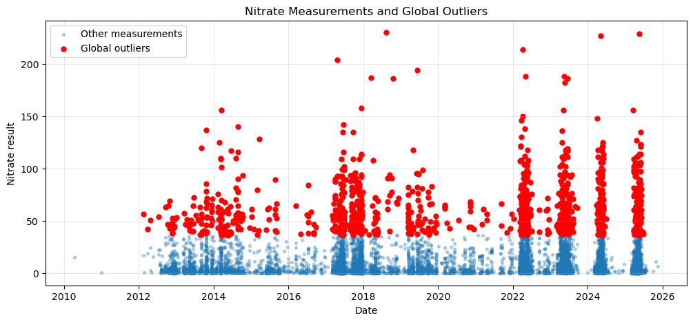
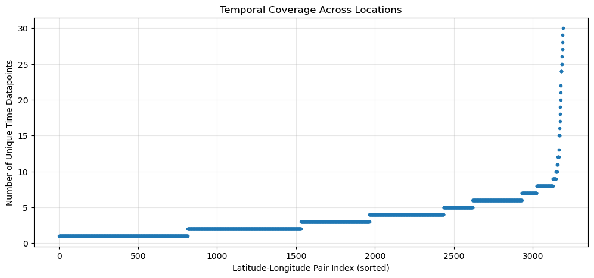
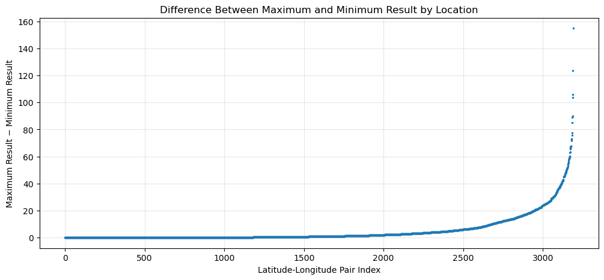
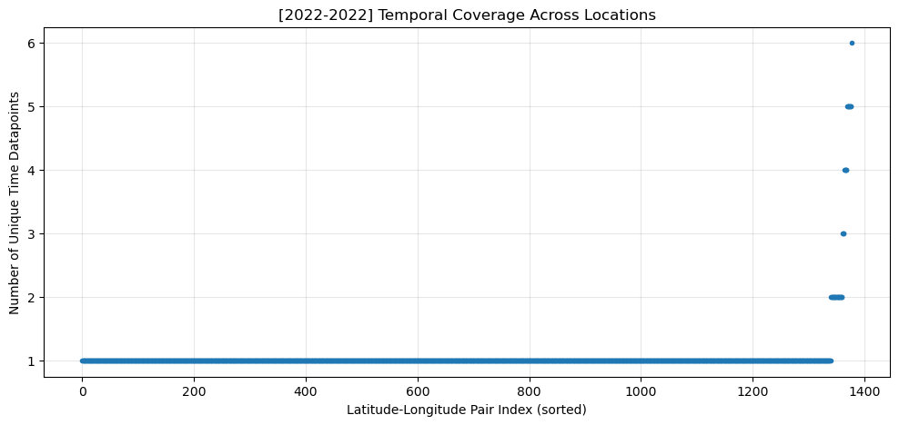
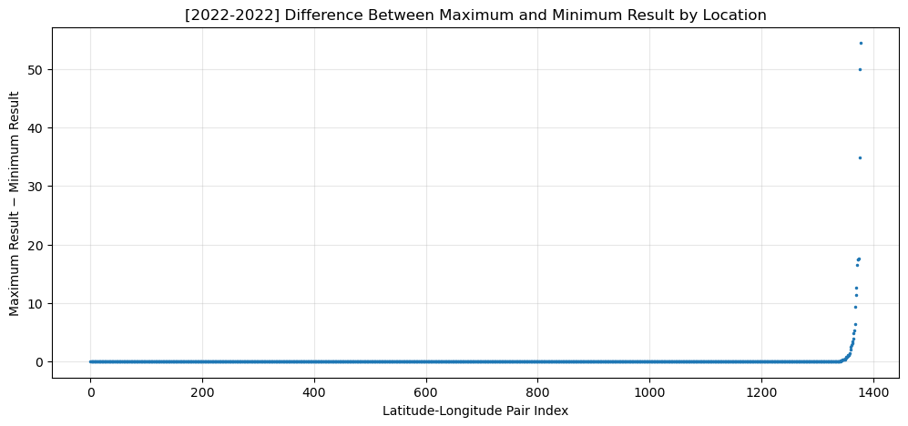
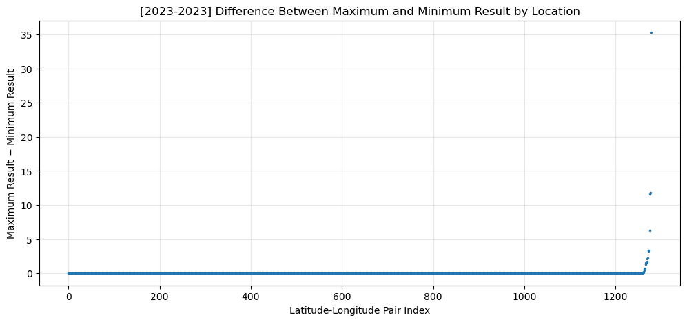
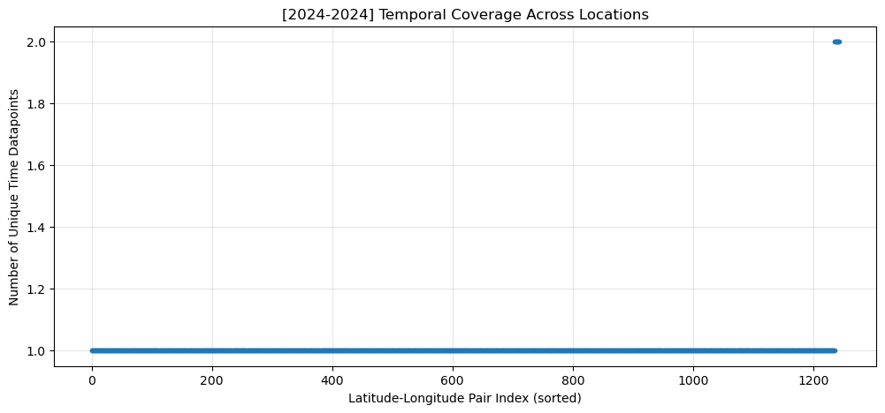
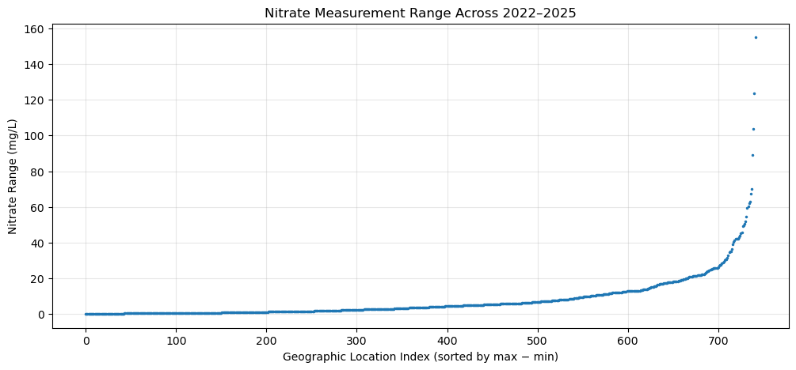
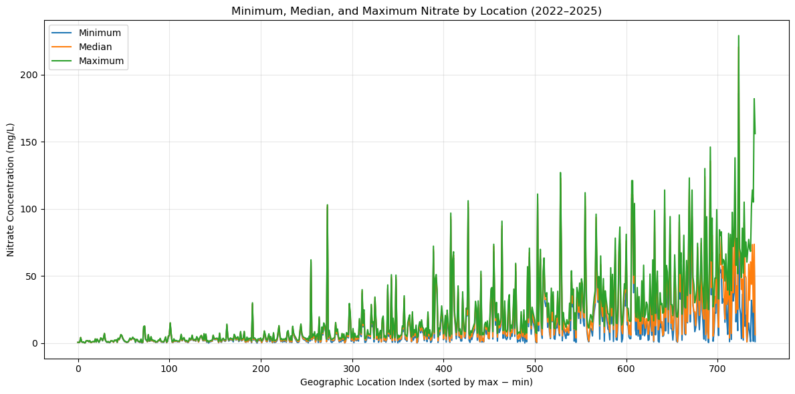

Code
# Imports
import pandas as pd
import geopandas as gpd
from pathlib import Path
import matplotlib.pyplot as pltPrepare groundwater nitrate measurements for modeling within the HUC8 watershed.
| tnmid | metasourceid | sourcedatadesc | sourceoriginator | sourcefeatureid | loaddate | referencegnis_ids | areaacres | areasqkm | states | huc8 | name | shape_Length | shape_Area | geometry | |
|---|---|---|---|---|---|---|---|---|---|---|---|---|---|---|---|
| 0 | {2EB2E16D-AA63-432F-9DC1-1820721507ED} | None | None | None | None | 2012-06-11 07:54:57+00:00 | None | 2130628.5 | 8622.36 | CA | 18060005 | Salinas | 7.476846 | 0.862215 | MULTIPOLYGON (((-121.79903 36.74909, -121.7986... |
| _id | gm_county_name | gm_dataset_name | gm_well_category | gm_data_source | gm_well_id | gm_chemical_vvl | gm_chemical_name | gm_result_modifier | gm_result | ... | src_analytical_method | src_lab_note | src_latitude | src_longitude | src_datum | src_well_depth_ft | src_top_depth_of_screen_ft | src_bottom_depth_of_screen_ft | src_well_category | geometry | |
|---|---|---|---|---|---|---|---|---|---|---|---|---|---|---|---|---|---|---|---|---|---|
| 0 | 1 | SAN LUIS OBISPO | WB_ILRP | Domestic | GeoTracker | AGL020003373-ROLLING DOM 1 | TDS | Total Dissolved Solids | = | 350.00000 | ... | A2540C | NaN | 35.738160 | -120.633550 | NAD83 | NaN | NaN | NaN | Domestic/Private Drinking Water Well | POINT (-120.63355 35.73816) |
| 1 | 2 | SANTA CRUZ | WB_ILRP | Irrigation / Industrial | GeoTracker | AGL020002084-AG_WELL_S | B | Boron | ND | 0.00053 | ... | E200.7 | NaN | 37.048478 | -122.226403 | NAD83 | NaN | NaN | NaN | Agriculture/irrigation well | POINT (-122.2264 37.04848) |
| 2 | 3 | SANTA BARBARA | WB_ILRP | Irrigation / Industrial | GeoTracker | AGL020005540-PRIMARY | SC | Specific Conductivity | = | 1400.00000 | ... | 2510B | NaN | 34.934444 | -120.470556 | NAD83 | NaN | NaN | NaN | Agriculture/irrigation well | POINT (-120.47056 34.93444) |
| 3 | 4 | SANTA BARBARA | WB_ILRP | Irrigation / Industrial | GeoTracker | AGL020027102-RIVER RCH | NO3N | Nitrate as N | = | 39.60000 | ... | E300.0 | NaN | 34.969640 | -120.481420 | NAD83 | NaN | NaN | NaN | Agriculture/irrigation well | POINT (-120.48142 34.96964) |
| 4 | 5 | MONTEREY | WB_ILRP | Irrigation / Industrial | GeoTracker | AGL020001277-BASSI_AG2 | CL | Chloride | = | 63.89000 | ... | E300.0 | NaN | 36.525190 | -121.457610 | NAD83 | NaN | NaN | NaN | Agriculture/irrigation well | POINT (-121.45761 36.52519) |
5 rows × 40 columns
EPSG:4326
EPSG:4269(94859, 40)is_censored
False 87816
True 7043
Name: count, dtype: int64# Convert sample date to datetime
groundwater_clean["gm_samp_collection_date"] = pd.to_datetime(
groundwater_clean["gm_samp_collection_date"]
)
# Standardize sampling time as four-character text
groundwater_clean["src_samp_collection_time"] = (
groundwater_clean["src_samp_collection_time"]
.astype("string")
.str.zfill(4)
)
groundwater_clean[
["gm_samp_collection_date", "src_samp_collection_time"]
].head()| gm_samp_collection_date | src_samp_collection_time | |
|---|---|---|
| 109743 | 2024-03-27 | 0900 |
| 143902 | 2017-04-21 | 0943 |
| 165745 | 2013-05-14 | 1040 |
| 247861 | 2013-05-14 | 1025 |
| 27985 | 2025-03-26 | 1330 |
gm_chemical_name
pH 11450
Specific Conductivity 11220
Total Dissolved Solids 8957
Temperature 6805
Nitrate+Nitrite 6574
Nitrate as N 5335
Sodium 4977
Calcium 4963
Magnesium 4963
Sulfate 4951
Chloride 4929
Potassium 4894
Alkalinity, total 4628
bicarbonate HCO3 749
Nitrite as N 690
Boron 525
Dissolved Oxygen (DO) 444
Iron 300
Manganese 202
1,2,3-Trichloropropane (1,2,3 TCP) 159
Hardness 63
Bicarbonate Alkalinity 33
carbonate CO3 2
Copper 1
Foaming Agents (MBAS) 1
Fluoride 1
Name: count, dtype: int64np.int64(1654)# Inspect repeated nitrate measurements
groundwater_nitrate[
duplicate_measurements
][
[
"gm_well_id",
"gm_samp_collection_date",
"src_samp_collection_time",
"gm_chemical_name",
"gm_result",
"gm_reporting_limit"
]
].sort_values(
[
"gm_well_id",
"gm_samp_collection_date",
"src_samp_collection_time",
"gm_chemical_name"
]
).head(20)| gm_well_id | gm_samp_collection_date | src_samp_collection_time | gm_chemical_name | gm_result | gm_reporting_limit | |
|---|---|---|---|---|---|---|
| 162803 | AGC100000001-CCGC_0001 | 2013-10-24 | 1715 | Nitrate as N | 4.7 | 0.1 |
| 52363 | AGC100000001-CCGC_0001 | 2013-10-24 | 1715 | Nitrate as N | 4.7 | 1.0 |
| 302340 | AGC100000001-CCGC_0002 | 2013-10-24 | 1300 | Nitrate as N | 21.8 | 0.1 |
| 216575 | AGC100000001-CCGC_0002 | 2013-10-24 | 1300 | Nitrate as N | 22.0 | 1.0 |
| 133903 | AGC100000001-CCGC_0003 | 2013-10-24 | 1615 | Nitrate as N | 66.8 | 0.1 |
| 289992 | AGC100000001-CCGC_0003 | 2013-10-24 | 1615 | Nitrate as N | 66.9 | 1.0 |
| 310112 | AGC100000001-CCGC_0005 | 2013-10-21 | 1110 | Nitrate as N | 7.2 | 1.0 |
| 261416 | AGC100000001-CCGC_0005 | 2013-10-21 | 1110 | Nitrate as N | 7.3 | 0.1 |
| 63918 | AGC100000001-CCGC_0006 | 2013-10-25 | 1340 | Nitrate as N | 53.6 | 0.1 |
| 137214 | AGC100000001-CCGC_0006 | 2013-10-25 | 1340 | Nitrate as N | 53.5 | 1.0 |
| 261950 | AGC100000001-CCGC_0007 | 2013-10-21 | 1510 | Nitrate as N | 16.3 | 0.1 |
| 162878 | AGC100000001-CCGC_0007 | 2013-10-21 | 1510 | Nitrate as N | 16.0 | 1.0 |
| 162588 | AGC100000001-CCGC_0008 | 2013-10-22 | 1640 | Nitrate as N | 62.8 | 1.0 |
| 180468 | AGC100000001-CCGC_0008 | 2013-10-22 | 1640 | Nitrate as N | 62.7 | 0.1 |
| 154320 | AGC100000001-CCGC_0009 | 2013-10-21 | 1640 | Nitrate as N | 0.9 | 1.0 |
| 61379 | AGC100000001-CCGC_0009 | 2013-10-21 | 1640 | Nitrate as N | 0.8 | 0.1 |
| 142072 | AGC100000001-CCGC_0010 | 2013-10-21 | 1440 | Nitrate as N | 16.0 | 1.0 |
| 4927 | AGC100000001-CCGC_0010 | 2013-10-21 | 1440 | Nitrate as N | 15.6 | 0.1 |
| 40807 | AGC100000001-CCGC_0011 | 2013-10-25 | 1420 | Nitrate as N | 24.4 | 0.1 |
| 239814 | AGC100000001-CCGC_0011 | 2013-10-25 | 1420 | Nitrate as N | 24.4 | 1.0 |
| gm_well_id | gm_samp_collection_date | src_samp_collection_time | gm_chemical_name | gm_result | gm_reporting_limit | |
|---|---|---|---|---|---|---|
| 115054 | AGL020000648-MAIN_D/I | 2014-06-02 | 1300 | Nitrate as N | 2.4 | 0.1 |
| 145450 | AGL020000648-MAIN_D/I | 2014-01-07 | 1340 | Nitrate as N | 2.3 | 1.0 |
| 113116 | AGL020000648-MAIN_D/I | 2014-01-07 | 1340 | Nitrate as N | 2.2 | 0.1 |
| 99768 | AGL020000648-MAIN_D/I | 2014-06-02 | 1300 | Nitrate as N | 2.5 | 1.0 |
| 42748 | AGL020002700-CARIAG_D/I | 2014-01-06 | 0930 | Nitrate as N | 3.0 | 0.1 |
| 333809 | AGL020002700-CARIAG_D/I | 2014-06-02 | 1000 | Nitrate as N | 0.5 | 1.0 |
| 96822 | AGL020007899-DOM/IRR | 2014-06-02 | 0920 | Nitrate as N | 2.5 | 1.0 |
| 119310 | AGL020007899-DOM/IRR | 2014-06-02 | 0920 | Nitrate as N | 2.5 | 0.1 |
| 84366 | AGL020007899-DOM/IRR | 2014-01-30 | 0850 | Nitrate as N | 2.8 | 0.1 |
| 60668 | AGL020007899-DOM/IRR | 2014-01-30 | 0850 | Nitrate as N | 2.7 | 1.0 |
| 187541 | AGL020002700-CARIAG_D/I | 2014-06-02 | 1000 | Nitrate as N | 0.6 | 0.1 |
| 35055 | AGL020002700-CARIAG_D/I | 2014-01-06 | 0930 | Nitrate as N | 2.9 | 1.0 |
| 195736 | AGL020004902-DOMESTIC | 2014-07-17 | 1150 | Nitrate as N | 3.8 | 1.0 |
| 114390 | AGC100000001-CCGC_0387 | 2015-08-25 | 0730 | Nitrate as N | 8.3 | 0.1 |
| 210484 | AGC100000001-CCGC_0387 | 2014-08-06 | 1020 | Nitrate as N | 9.3 | 1.0 |
| 49482 | AGC100000001-CCGC_0387 | 2014-08-06 | 1020 | Nitrate as N | 9.2 | 0.1 |
| 92295 | AGC100000001-CCGC_0389 | 2014-08-06 | 1130 | Nitrate as N | 1.9 | 0.1 |
| 151770 | AGC100000001-CCGC_0389 | 2014-08-06 | 1130 | Nitrate as N | 2.0 | 1.0 |
| 229216 | AGC100000001-CCGC_0388 | 2014-08-06 | 1100 | Nitrate as N | 4.1 | 1.0 |
| 73495 | AGC100000001-CCGC_0388 | 2014-08-06 | 1100 | Nitrate as N | 4.1 | 0.1 |
# Average replicate nitrate measurements from the same sample
groundwater_nitrate_clean = (
groundwater_nitrate
.groupby(
[
"gm_well_id",
"gm_well_category",
"gm_samp_collection_date",
"src_samp_collection_time",
"gm_chemical_name",
"gm_latitude",
"gm_longitude"
],
as_index=False
)
.agg(
gm_result=("gm_result", "mean"),
gm_reporting_limit=("gm_reporting_limit", "min")
)
)np.int64(0)# Create one nitrate concentration per groundwater sample
groundwater_final = (
groundwater_nitrate_clean
.groupby(
[
"gm_well_id",
"gm_well_category",
"gm_samp_collection_date",
"src_samp_collection_time",
"gm_latitude",
"gm_longitude"
],
as_index=False
)
.agg(
nitrate_mg_L=("gm_result", "mean")
)
)
groundwater_final.shape(10665, 7)count 10665.000000
mean 13.123557
std 21.049301
min 0.000000
25% 1.500000
50% 4.200000
75% 15.500000
max 230.000000
Name: nitrate_mg_L, dtype: float64count 10665.000000
mean 13.123557
std 21.049301
min 0.000000
25% 1.500000
50% 4.200000
75% 15.500000
max 230.000000
Name: nitrate_mg_L, dtype: float64gm_well_id 0
gm_well_category 0
gm_samp_collection_date 0
src_samp_collection_time 0
gm_latitude 0
gm_longitude 0
nitrate_mg_L 0
dtype: int64## Globally using interquartile range method.
## Anything above 75% percentile.
#
def flag_outliers(df):
q1 = df["nitrate_mg_L"].quantile(0.25)
q3 = df["nitrate_mg_L"].quantile(0.75)
iqr = q3 - q1
#print(f"Interquartile range: {iqr:.3f}")
lower = 0
upper = q3 + 1.5 * iqr
df = df.copy()
df["is_outlier"] = (
(df["nitrate_mg_L"] < lower) |
(df["nitrate_mg_L"] > upper)
)
return df
outliers = flag_outliers(groundwater_final)
print(f"Number of outliers: {len(outliers)}")
display(outliers.sort_values("nitrate_mg_L", ascending=False))Number of outliers: 10665| gm_well_id | gm_well_category | gm_samp_collection_date | src_samp_collection_time | gm_latitude | gm_longitude | nitrate_mg_L | is_outlier | |
|---|---|---|---|---|---|---|---|---|
| 7675 | AGL020015946-WELL 1 | Irrigation / Industrial | 2018-08-15 | 1400 | 35.637749 | -120.856456 | 230.0 | True |
| 4337 | AGL020004057-HOME_DOM | Domestic | 2025-05-20 | 0906 | 36.638430 | -121.563200 | 229.0 | True |
| 4336 | AGL020004057-HOME_DOM | Domestic | 2024-05-03 | 1027 | 36.638430 | -121.563200 | 227.0 | True |
| 4334 | AGL020004057-HOME_DOM | Domestic | 2022-04-06 | 1305 | 36.638430 | -121.563200 | 214.0 | True |
| 6477 | AGL020008662-WELL #3 | Domestic | 2017-04-20 | 1400 | 36.617980 | -121.558400 | 204.0 | True |
| ... | ... | ... | ... | ... | ... | ... | ... | ... |
| 4106 | AGL020003880-MFMOLE4_I | Irrigation / Industrial | 2024-04-10 | 1430 | 36.734013 | -121.770174 | 0.0 | False |
| 7472 | AGL020014794-WELL #1 | Irrigation / Industrial | 2024-04-09 | 0930 | 36.482700 | -121.414770 | 0.0 | False |
| 9569 | AGL020036095-DOM WELL | Domestic | 2024-04-04 | 1210 | 35.658410 | -120.603240 | 0.0 | False |
| 9573 | AGL020036149-WELL AG | Domestic | 2024-04-04 | 0931 | 36.480730 | -121.485090 | 0.0 | False |
| 9650 | AGL020036644-WELL 1 | Irrigation / Industrial | 2024-04-09 | 1100 | 36.303100 | -121.307000 | 0.0 | False |
10665 rows × 8 columns
# Identify outliers within spacial groupings
outliers_by_location = outliers[outliers["is_outlier"]]
# Get all measurements at the flagged locations
locations = outliers.loc[
outliers["is_outlier"],
["gm_latitude", "gm_longitude"]
].drop_duplicates()
all_measurements = groundwater_final.merge(
locations,
on=["gm_latitude", "gm_longitude"],
how="inner"
)
# Restore the global outlier flags by matching each measurement
all_measurements = all_measurements.merge(
outliers[
["gm_latitude", "gm_longitude",
"gm_samp_collection_date", "nitrate_mg_L", "is_outlier"]
],
on=["gm_latitude", "gm_longitude",
"gm_samp_collection_date", "nitrate_mg_L"],
how="left",
suffixes=("", "_flag")
)
# Sort outliers first, then other measurements by descending nitrate value
all_measurements = all_measurements.sort_values(
["gm_latitude", "gm_longitude", "is_outlier", "nitrate_mg_L"],
ascending=[True, True, False, False]
)
# Calculate statistics for each location
def summarize_location(df):
outlier_values = df.loc[df["is_outlier"], "nitrate_mg_L"]
normal_values = df.loc[~df["is_outlier"], "nitrate_mg_L"].dropna()
return pd.Series({
"outlier": outlier_values.max(),
"mean_including_outlier": df["nitrate_mg_L"].mean(),
"mean_excluding_outlier": normal_values.mean(),
"num_measurements": df["nitrate_mg_L"].count(),
"num_non_outliers": len(normal_values)
})
comparison = (
all_measurements.groupby(["gm_latitude", "gm_longitude"])
.apply(summarize_location)
.reset_index()
)
comparison_filtered = comparison[(comparison["num_measurements"] > 2) & (comparison["num_non_outliers"] > 2)]
comparison_filtered| gm_latitude | gm_longitude | outlier | mean_including_outlier | mean_excluding_outlier | num_measurements | num_non_outliers | |
|---|---|---|---|---|---|---|---|
| 7 | 36.008080 | -120.885800 | 36.70000 | 23.900000 | 19.633333 | 4.0 | 3.0 |
| 14 | 36.015550 | -120.888400 | 71.90000 | 40.683333 | 30.166667 | 6.0 | 3.0 |
| 34 | 36.089410 | -120.966220 | 69.60000 | 28.361379 | 16.460000 | 7.0 | 5.0 |
| 35 | 36.090030 | -120.971380 | 45.90059 | 18.316765 | 12.800000 | 6.0 | 5.0 |
| 37 | 36.107100 | -121.010127 | 41.80000 | 29.806667 | 27.408000 | 6.0 | 5.0 |
| ... | ... | ... | ... | ... | ... | ... | ... |
| 410 | 36.651390 | -121.554250 | 60.20000 | 29.966667 | 2.500000 | 6.0 | 3.0 |
| 413 | 36.658610 | -121.565820 | 105.00000 | 38.050000 | 15.733333 | 4.0 | 3.0 |
| 418 | 36.676752 | -121.574361 | 40.72000 | 32.123250 | 29.257667 | 4.0 | 3.0 |
| 420 | 36.678170 | -121.583380 | 37.03000 | 27.267500 | 24.013333 | 4.0 | 3.0 |
| 422 | 36.681500 | -121.573830 | 41.40000 | 35.350000 | 33.333333 | 4.0 | 3.0 |
82 rows × 7 columns
We potentially could filter out all the points where the mean_including_outlier and the mean_excluding_outlier signficantly diverge given that num_measurements > 2 and num_non_outliers > 2.
I will leave everything as is for now.
plt.figure(figsize=(12, 5))
plt.scatter(
groundwater_final["gm_samp_collection_date"],
groundwater_final["nitrate_mg_L"],
s=8,
alpha=0.3,
label="Other measurements"
)
plt.scatter(
outliers["gm_samp_collection_date"].loc[outliers["is_outlier"]],
outliers["nitrate_mg_L"].loc[outliers["is_outlier"]],
s=25,
color="red",
label="Global outliers"
)
plt.xlabel("Date")
plt.ylabel("Nitrate result")
plt.title("Nitrate Measurements and Global Outliers")
plt.legend()
plt.grid(alpha=0.3)
plt.show()
Inconclusive result. Should discuss with others.
## creating datetime column
from pathlib import Path
import sys
current = Path.cwd().resolve()
project_root = next(
(p for p in [current, *current.parents] if (p / "src").is_dir()),
None
)
if project_root is None:
raise FileNotFoundError("Could not find the project root containing src/")
sys.path.insert(0, str(project_root))
from src.shared.datetime import create_datetime
groundwater = create_datetime(groundwater_final, date_col="gm_samp_collection_date", time_col="src_samp_collection_time")
groundwater = groundwater.drop(columns=["src_samp_collection_time"])3191# Count unique time datapoints for each coordinate pair
temporal_counts = (
groundwater.groupby(["gm_latitude", "gm_longitude"])["gm_samp_collection_date"]
.nunique()
.reset_index(name="num_timepoints")
.sort_values("num_timepoints")
.reset_index(drop=True)
)
mean_count = temporal_counts["num_timepoints"].mean()
median_count = temporal_counts["num_timepoints"].median()
max_count = temporal_counts["num_timepoints"].max()
min_count = temporal_counts["num_timepoints"].min()
print(f"Mean number of unique timepoints: {mean_count:.2f}")
print(f"Median number of unique timepoints: {median_count:.2f}")
print(f"Max number of unique timepoints: {max_count:.2f}")
print(f"Min number of unique timepoints: {min_count:.2f}")
# Assign each coordinate pair its sorted index
temporal_counts["pair_index"] = temporal_counts.index
# Merge the sorted indices back into the original data
groundwater_plot = groundwater.merge(
temporal_counts[["gm_latitude", "gm_longitude", "pair_index"]],
on=["gm_latitude", "gm_longitude"],
how="left"
)
plt.figure(figsize=(12, 5))
plt.plot(temporal_counts.index, temporal_counts["num_timepoints"], ".")
plt.xlabel("Latitude-Longitude Pair Index (sorted)")
plt.ylabel("Number of Unique Time Datapoints")
plt.title("Temporal Coverage Across Locations")
plt.grid(True, alpha=0.3)
plt.show()
# Calculate median and maximum result for each coordinate pair
result_stats = (
groundwater_plot.groupby("pair_index")["nitrate_mg_L"]
.agg(["median", "max", "min", "mean", "std"])
)
# Difference between maximum and median
result_stats["max_minus_min"] = (
result_stats["max"] - result_stats["min"]
)
# Sort by increasing difference between maximum and median
result_stats = result_stats.sort_values(
"max_minus_min"
).reset_index(drop=True)
# Plot
plt.figure(figsize=(12, 5))
plt.plot(
result_stats.index,
result_stats["max_minus_min"],
".",
markersize=3
)
plt.xlabel("Latitude-Longitude Pair Index")
plt.ylabel("Maximum Result − Minimum Result")
plt.title("Difference Between Maximum and Minimum Result by Location")
plt.grid(True, alpha=0.3)
plt.show()
Mean number of unique timepoints: 3.34
Median number of unique timepoints: 3.00
Max number of unique timepoints: 30.00
Min number of unique timepoints: 1.00

160 mg/L seems like a huge variance between minimum and maximum measurements.
# Total number of unique geographical points across the dataset
total_points = groundwater[["gm_latitude", "gm_longitude"]].drop_duplicates().shape[0]
# Extract year
groundwater["year"] = groundwater["gm_samp_collection_date"].dt.year
# Count unique geographical points measured per year
yearly_coverage = (
groundwater.groupby("year")
.apply(
lambda group: group[["gm_latitude", "gm_longitude"]]
.drop_duplicates()
.shape[0],
include_groups=False
)
.reset_index(name="unique_geographical_points")
)
# Calculate percentage of all geographical points measured each year
yearly_coverage["percentage_of_total"] = (
yearly_coverage["unique_geographical_points"] / total_points * 100
)
print(f"Total unique geographical points: {total_points}")
display(yearly_coverage)Total unique geographical points: 3191| year | unique_geographical_points | percentage_of_total | |
|---|---|---|---|
| 0 | 2010.0 | 1 | 0.031338 |
| 1 | 2011.0 | 1 | 0.031338 |
| 2 | 2012.0 | 352 | 11.031025 |
| 3 | 2013.0 | 649 | 20.338452 |
| 4 | 2014.0 | 391 | 12.253212 |
| 5 | 2015.0 | 209 | 6.549671 |
| 6 | 2016.0 | 110 | 3.447195 |
| 7 | 2017.0 | 1439 | 45.095581 |
| 8 | 2018.0 | 308 | 9.652147 |
| 9 | 2019.0 | 501 | 15.700407 |
| 10 | 2020.0 | 138 | 4.324663 |
| 11 | 2021.0 | 68 | 2.130993 |
| 12 | 2022.0 | 1378 | 43.183955 |
| 13 | 2023.0 | 1279 | 40.081479 |
| 14 | 2024.0 | 1244 | 38.984644 |
| 15 | 2025.0 | 1274 | 39.924788 |
def temporal_analysis(start_year, end_year, groundwater, groundwater_period):
groundwater_filtered = groundwater[
groundwater["gm_samp_collection_date"].dt.year.between(
start_year, end_year
)
].copy()
# Count unique time datapoints for each coordinate pair
temporal_counts = (
groundwater_filtered
.groupby(["gm_latitude", "gm_longitude"])["gm_samp_collection_date"]
.nunique()
.reset_index(name="num_timepoints")
.sort_values("num_timepoints")
.reset_index(drop=True)
)
mean_count = temporal_counts["num_timepoints"].mean()
median_count = temporal_counts["num_timepoints"].median()
max_count = temporal_counts["num_timepoints"].max()
min_count = temporal_counts["num_timepoints"].min()
print(f"Mean number of unique timepoints: {mean_count:.2f}")
print(f"Median number of unique timepoints: {median_count:.2f}")
print(f"Max number of unique timepoints: {max_count:.2f}")
print(f"Min number of unique timepoints: {min_count:.2f}")
# Assign each coordinate pair its sorted index
temporal_counts["pair_index"] = temporal_counts.index
######## OUTLIER ANALYSIS ########
# Merge sorted indices into the filtered data
groundwater_plot = groundwater_filtered.merge(
temporal_counts[
["gm_latitude", "gm_longitude", "pair_index"]
],
on=["gm_latitude", "gm_longitude"],
how="left"
)
# Calculate nitrate statistics for each coordinate pair
result_stats = (
groundwater_plot.groupby("pair_index")["nitrate_mg_L"]
.agg(["median", "max", "min", "mean", "std"])
)
# Difference between maximum and minimum
result_stats["max_minus_min"] = (
result_stats["max"] - result_stats["min"]
)
threshold = 10
# Identify coordinate pairs exceeding the variability threshold OVERALL
high_variability = result_stats[
result_stats["max_minus_min"] > threshold
]
# Get coordinate pairs exceeding the threshold
high_variability_locations = temporal_counts.loc[
temporal_counts["pair_index"].isin(high_variability.index),
["gm_latitude", "gm_longitude"]
].drop_duplicates()
# Retrieve all original groundwater columns for those locations
selected_groundwater = groundwater.merge(
high_variability_locations,
on=["gm_latitude", "gm_longitude"],
how="inner"
)
print(
f"\nAll locations with overall nitrate concentration ranges "
f"(max-min) exceeding {threshold} mg/L:"
)
display(
selected_groundwater[
selected_groundwater["gm_samp_collection_date"].dt.year.between(
start_year, end_year
)
]
)
######## EXCLUDING DATA ########
# Temporarily add year to the period dataframe to allow year-level grouping
groundwater_period = groundwater_period.copy()
groundwater_period["_year"] = groundwater_period["gm_samp_collection_date"].dt.year
# 1. Condition A: Max-Min > threshold IN THAT SPECIFIC YEAR
yearly_stats = groundwater_period.groupby(["gm_latitude", "gm_longitude", "_year"]).agg(
max_nitrate=("nitrate_mg_L", "max"),
min_nitrate=("nitrate_mg_L", "min")
).reset_index()
yearly_stats["max_minus_min"] = yearly_stats["max_nitrate"] - yearly_stats["min_nitrate"]
# 2. Condition B: Location has multiple well IDs overall
overall_wells = groundwater_period.groupby(["gm_latitude", "gm_longitude"]).agg(
unique_wells=("gm_well_id", "nunique")
).reset_index()
# Combine both conditions
exclusion_stats = yearly_stats.merge(overall_wells, on=["gm_latitude", "gm_longitude"])
# Identify the exact (lat, lon, year) groups to drop
locations_years_to_exclude = exclusion_stats[
(exclusion_stats["max_minus_min"] > threshold) &
(exclusion_stats["unique_wells"] > 1)
][["gm_latitude", "gm_longitude", "_year"]]
# Filter groundwater_period to exclude those groups
groundwater_period = groundwater_period.merge(
locations_years_to_exclude.assign(exclude=True),
on=["gm_latitude", "gm_longitude", "_year"],
how="left"
)
groundwater_period = (
groundwater_period[groundwater_period["exclude"].isna()]
.drop(columns=["exclude", "_year"])
.copy()
)
print(f"\nLocation-years excluded: {len(locations_years_to_exclude)}")
print(f"Remaining measurements: {len(groundwater_period)}")
######## PLOTTING ########
plt.figure(figsize=(12, 5))
plt.plot(
temporal_counts.index,
temporal_counts["num_timepoints"],
"."
)
plt.xlabel("Latitude-Longitude Pair Index (sorted)")
plt.ylabel("Number of Unique Time Datapoints")
plt.title(
f"[{start_year}-{end_year}] Temporal Coverage Across Locations"
)
plt.grid(True, alpha=0.3)
plt.show()
# Sort by increasing difference between maximum and minimum
result_stats = result_stats.sort_values(
"max_minus_min"
).reset_index(drop=True)
plt.figure(figsize=(12, 5))
plt.plot(
result_stats.index,
result_stats["max_minus_min"],
".",
markersize=3
)
plt.xlabel("Latitude-Longitude Pair Index")
plt.ylabel("Maximum Result − Minimum Result")
plt.title(
f"[{start_year}-{end_year}] Difference Between Maximum "
"and Minimum Result by Location"
)
plt.grid(True, alpha=0.3)
plt.show()
return groundwater_periodMean number of unique timepoints: 1.06
Median number of unique timepoints: 1.00
Max number of unique timepoints: 6.00
Min number of unique timepoints: 1.00
All locations with overall nitrate concentration ranges (max-min) exceeding 10 mg/L:| gm_well_id | gm_well_category | gm_samp_collection_date | gm_latitude | gm_longitude | nitrate_mg_L | year | |
|---|---|---|---|---|---|---|---|
| 0 | AGL020002892-MART_D_Y | Domestic | 2022-05-25 15:45:00 | 36.573020 | -121.575265 | 20.20 | 2022.0 |
| 1 | AGL020003637-AGSO_WELL1 | Irrigation / Industrial | 2022-05-25 16:20:00 | 36.573020 | -121.575265 | 2.80 | 2022.0 |
| 20 | AGL020007533-GH20-07 | Irrigation / Industrial | 2022-03-15 11:48:00 | 36.645880 | -121.606600 | 24.80 | 2022.0 |
| 21 | AGL020007533-GH20-07 | Irrigation / Industrial | 2022-05-12 14:22:00 | 36.645880 | -121.606600 | 36.00 | 2022.0 |
| 22 | AGL020007533-GH20-07 | Irrigation / Industrial | 2022-06-13 12:49:00 | 36.645880 | -121.606600 | 36.50 | 2022.0 |
| 23 | AGL020007533-GH20-07 | Irrigation / Industrial | 2022-09-15 11:50:00 | 36.645880 | -121.606600 | 20.00 | 2022.0 |
| 24 | AGL020007533-GH20-07 | Irrigation / Industrial | 2022-12-15 11:57:00 | 36.645880 | -121.606600 | 31.55 | 2022.0 |
| 42 | AGL020007535-GH17-02 | Irrigation / Industrial | 2022-01-05 13:51:00 | 36.551370 | -121.498000 | 52.10 | 2022.0 |
| 43 | AGL020007535-GH17-02 | Irrigation / Industrial | 2022-03-09 10:27:00 | 36.551370 | -121.498000 | 2.20 | 2022.0 |
| 44 | AGL020007535-GH17-02 | Irrigation / Industrial | 2022-05-12 14:00:00 | 36.551370 | -121.498000 | 3.90 | 2022.0 |
| 45 | AGL020007535-GH17-02 | Irrigation / Industrial | 2022-06-13 11:37:00 | 36.551370 | -121.498000 | 3.80 | 2022.0 |
| 46 | AGL020007535-GH17-02 | Irrigation / Industrial | 2022-09-07 09:31:00 | 36.551370 | -121.498000 | 3.60 | 2022.0 |
| 47 | AGL020007535-GH17-02 | Irrigation / Industrial | 2022-12-15 11:40:00 | 36.551370 | -121.498000 | 8.60 | 2022.0 |
| 68 | AGL020007540-GH12-09 | Domestic | 2022-03-16 11:05:00 | 36.231690 | -121.170200 | 16.80 | 2022.0 |
| 69 | AGL020007540-GH12-09 | Domestic | 2022-05-24 07:15:00 | 36.231690 | -121.170200 | 28.00 | 2022.0 |
| 70 | AGL020007540-GH12-09 | Domestic | 2022-06-15 11:05:00 | 36.231690 | -121.170200 | 25.05 | 2022.0 |
| 71 | AGL020007540-GH12-09 | Domestic | 2022-09-07 10:17:00 | 36.231690 | -121.170200 | 28.45 | 2022.0 |
| 72 | AGL020007540-GH12-09 | Domestic | 2022-12-16 11:35:00 | 36.231690 | -121.170200 | 51.60 | 2022.0 |
| 87 | AGL020014956-GH23-10 | Irrigation / Industrial | 2022-03-11 11:23:00 | 36.578680 | -121.475470 | 28.45 | 2022.0 |
| 88 | AGL020014956-GH23-10 | Irrigation / Industrial | 2022-06-09 12:06:00 | 36.578680 | -121.475470 | 21.80 | 2022.0 |
| 89 | AGL020014956-GH23-10 | Irrigation / Industrial | 2022-09-14 14:08:00 | 36.578680 | -121.475470 | 39.45 | 2022.0 |
| 90 | AGL020014956-GH23-10 | Irrigation / Industrial | 2022-12-19 12:10:00 | 36.578680 | -121.475470 | 39.00 | 2022.0 |
| 120 | AGL020017603-GH18-01 | Irrigation / Industrial | 2022-03-18 08:45:00 | 36.648930 | -121.542080 | 20.75 | 2022.0 |
| 121 | AGL020017603-GH18-01 | Irrigation / Industrial | 2022-06-09 11:29:00 | 36.648930 | -121.542080 | 20.85 | 2022.0 |
| 122 | AGL020017603-GH18-01 | Irrigation / Industrial | 2022-09-15 10:54:00 | 36.648930 | -121.542080 | 33.35 | 2022.0 |
| 150 | AGL020017603-GH18-03 | Irrigation / Industrial | 2022-03-18 08:55:00 | 36.645120 | -121.542150 | 25.25 | 2022.0 |
| 151 | AGL020017603-GH18-03 | Irrigation / Industrial | 2022-06-09 11:40:00 | 36.645120 | -121.542150 | 22.15 | 2022.0 |
| 152 | AGL020017603-GH18-03 | Irrigation / Industrial | 2022-09-15 11:07:00 | 36.645120 | -121.542150 | 33.60 | 2022.0 |
| 174 | AGL020017603-GH18-DOM | Domestic | 2022-03-18 09:09:00 | 36.649383 | -121.536875 | 19.05 | 2022.0 |
| 175 | AGL020017603-GH18-DOM | Domestic | 2022-05-12 09:47:00 | 36.649383 | -121.536875 | 20.80 | 2022.0 |
| 176 | AGL020017603-GH18-DOM | Domestic | 2022-06-09 11:49:00 | 36.649383 | -121.536875 | 3.40 | 2022.0 |
| 177 | AGL020017603-GH18-DOM | Domestic | 2022-09-15 10:50:00 | 36.649383 | -121.536875 | 20.85 | 2022.0 |
| 178 | AGL020038542-SILA WELL1 | Irrigation / Industrial | 2022-05-05 14:02:00 | 36.651390 | -121.554250 | 56.90 | 2022.0 |
| 181 | AGL020038549-LAUR WELL1 | Irrigation / Industrial | 2022-05-05 14:30:00 | 36.651390 | -121.554250 | 2.50 | 2022.0 |
Location-years excluded: 3
Remaining measurements: 5280

Mean number of unique timepoints: 1.01
Median number of unique timepoints: 1.00
Max number of unique timepoints: 2.00
Min number of unique timepoints: 1.00
All locations with overall nitrate concentration ranges (max-min) exceeding 10 mg/L:| gm_well_id | gm_well_category | gm_samp_collection_date | gm_latitude | gm_longitude | nitrate_mg_L | year | |
|---|---|---|---|---|---|---|---|
| 22 | AGL020007540-GH12-09 | Domestic | 2023-03-09 11:10:00 | 36.231690 | -121.170200 | 9.25 | 2023.0 |
| 23 | AGL020007540-GH12-09 | Domestic | 2023-05-30 08:40:00 | 36.231690 | -121.170200 | 20.90 | 2023.0 |
| 39 | AGL020037470-GH27-01 | Domestic | 2023-03-08 10:31:00 | 36.569800 | -121.488380 | 8.80 | 2023.0 |
| 40 | AGL020037470-GH27-01 | Domestic | 2023-05-09 13:50:00 | 36.569800 | -121.488380 | 20.60 | 2023.0 |
| 56 | AGL020037470-GH27-DOM | Domestic | 2023-03-08 10:35:00 | 36.570371 | -121.488557 | 8.60 | 2023.0 |
| 57 | AGL020037470-GH27-DOM | Domestic | 2023-05-09 13:18:00 | 36.570371 | -121.488557 | 43.90 | 2023.0 |
Location-years excluded: 0
Remaining measurements: 5280
Mean number of unique timepoints: 1.01
Median number of unique timepoints: 1.00
Max number of unique timepoints: 2.00
Min number of unique timepoints: 1.00
All locations with overall nitrate concentration ranges (max-min) exceeding 10 mg/L:| gm_well_id | gm_well_category | gm_samp_collection_date | gm_latitude | gm_longitude | nitrate_mg_L | year | |
|---|---|---|---|---|---|---|---|
| 2 | AGL020000704-BR_AGWELL1 | Irrigation / Industrial | 2024-05-02 12:50:00 | 36.518110 | -121.456060 | 46.2 | 2024.0 |
| 3 | AGL020000704-BR_AGWELL1 | Irrigation / Industrial | 2024-08-20 10:30:00 | 36.518110 | -121.456060 | 15.5 | 2024.0 |
| 5 | AGL020039606-MC DOUGALL2 | Domestic | 2024-04-23 13:50:00 | 36.593809 | -121.602957 | 12.8 | 2024.0 |
| 6 | AGL020039606-MC DOUGALL2 | Domestic | 2024-07-11 10:15:00 | 36.593809 | -121.602957 | 33.6 | 2024.0 |
Location-years excluded: 0
Remaining measurements: 5280
Mean number of unique timepoints: 1.00
Median number of unique timepoints: 1.00
Max number of unique timepoints: 2.00
Min number of unique timepoints: 1.00
All locations with overall nitrate concentration ranges (max-min) exceeding 10 mg/L:| gm_well_id | gm_well_category | gm_samp_collection_date | gm_latitude | gm_longitude | nitrate_mg_L | year | |
|---|---|---|---|---|---|---|---|
| 2 | AGL020038542-SILA WELL1 | Irrigation / Industrial | 2025-04-10 12:25:00 | 36.65139 | -121.55425 | 55.2 | 2025.0 |
| 5 | AGL020038549-LAUR WELL1 | Irrigation / Industrial | 2025-04-10 12:05:00 | 36.65139 | -121.55425 | 2.8 | 2025.0 |
Location-years excluded: 0
Remaining measurements: 5280The 2022-2025 data has a similar amount of unique geographical points: 1200-1400. During those years, most geographical locations have 1 measurement during a singular year.
There are outliers printed, where multiple measurements have been conducted and the nitrate concentration measurement in the same year at the same location (but different wells) significantly disagrees.
My best suggestion would be to train our model on 2022-2025 data, excluding outliers.
I don’t know how the well measurement changes between years.
years = [2022, 2023, 2024, 2025]
location_cols = ["gm_latitude", "gm_longitude"]
groundwater_period["year"] = (
groundwater_period["gm_samp_collection_date"].dt.year
)
# Find locations with at least one measurement in every year
years_per_location = (
groundwater_period.groupby(location_cols)["year"]
.nunique()
)
complete_locations = years_per_location[
years_per_location == len(years)
].index
print(f"Number of wells present in all years 2022–2025: {len(complete_locations)}")
# Keep measurements only from those locations
complete_data = groundwater_period.set_index(location_cols).loc[
groundwater_period.set_index(location_cols).index.isin(complete_locations)
].reset_index()
# Calculate max - min across all measurements from 2022–2025
location_stats = (
complete_data.groupby(location_cols)["nitrate_mg_L"]
.agg(["mean", "min", "max", "median"])
)
annual_means = (
complete_data.groupby(location_cols + ["year"])["nitrate_mg_L"]
.mean()
.unstack("year")
.reindex(columns=years)
)
display(annual_means.sort_values(by=[2022, 'gm_latitude', "gm_longitude"]))
location_stats["max_minus_min"] = (
location_stats["max"] - location_stats["min"]
)
# Sort by increasing max - min and assign geographic index
location_stats = location_stats.sort_values(
"max_minus_min"
).reset_index(drop=True)
# Plot
plt.figure(figsize=(12, 5))
plt.plot(
location_stats.index,
location_stats["max_minus_min"],
".",
markersize=3
)
plt.xlabel("Geographic Location Index (sorted by max − min)")
plt.ylabel("Nitrate Range (mg/L)")
plt.title("Nitrate Measurement Range Across 2022–2025")
plt.grid(True, alpha=0.3)
plt.show()
plt.figure(figsize=(12, 6))
plt.plot(location_stats.index, location_stats["min"], label="Minimum")
plt.plot(location_stats.index, location_stats["median"], label="Median")
plt.plot(location_stats.index, location_stats["max"], label="Maximum")
plt.xlabel("Geographic Location Index (sorted by max − min)")
plt.ylabel("Nitrate Concentration (mg/L)")
plt.title("Minimum, Median, and Maximum Nitrate by Location (2022–2025)")
plt.legend()
plt.grid(True, alpha=0.3)
plt.tight_layout()
plt.show()Number of wells present in all years 2022–2025: 742| year | 2022 | 2023 | 2024 | 2025 | |
|---|---|---|---|---|---|
| gm_latitude | gm_longitude | ||||
| 35.491180 | -120.435050 | 0.106 | 1.310 | 0.977 | 1.810 |
| 35.597690 | -120.564500 | 0.129 | 0.279 | 0.191 | 0.311 |
| 35.491948 | -120.696402 | 0.213 | 1.430 | 0.326 | 0.426 |
| 35.715300 | -120.703510 | 0.213 | 1.600 | 0.400 | 0.600 |
| 35.711860 | -120.704440 | 0.272 | 2.300 | 2.700 | 0.500 |
| ... | ... | ... | ... | ... | ... |
| 36.013750 | -120.892000 | 121.000 | 119.000 | 125.000 | 127.000 |
| 36.052080 | -120.920640 | 130.000 | 125.000 | 107.000 | 123.000 |
| 36.342850 | -121.236820 | 138.000 | 118.000 | 96.000 | 106.000 |
| 36.052150 | -120.920490 | 146.000 | 136.000 | 121.000 | 135.000 |
| 36.638430 | -121.563200 | 214.000 | 186.000 | 227.000 | 229.000 |
742 rows × 4 columns


Number of wells present in all years 2022–2025: 742. (After excluding outliers from previous tests.)
But judging from the range of the nitrate measurement, there are some significant variances from year to year.
## original full dataset restricted by year
years = [2022, 2023, 2024, 2025]
groundwater_check = groundwater[
groundwater["gm_samp_collection_date"].dt.year.isin(years)]
## compare to groundwater_period
comparison = groundwater_check.merge(
groundwater_period.drop_duplicates(),
how="outer",
indicator=True
)
print("Excluded data:")
display(comparison[comparison["_merge"] == "left_only"].drop(columns="_merge").sort_values(by=["year", "gm_latitude", "gm_longitude"]))
Excluded data:| gm_well_id | gm_well_category | gm_samp_collection_date | gm_latitude | gm_longitude | nitrate_mg_L | year | |
|---|---|---|---|---|---|---|---|
| 1139 | AGL020002892-MART_D_Y | Domestic | 2022-05-25 15:45:00 | 36.57302 | -121.575265 | 20.2 | 2022.0 |
| 1457 | AGL020003637-AGSO_WELL1 | Irrigation / Industrial | 2022-05-25 16:20:00 | 36.57302 | -121.575265 | 2.8 | 2022.0 |
| 4583 | AGL020038542-SILA WELL1 | Irrigation / Industrial | 2022-05-05 14:02:00 | 36.65139 | -121.554250 | 56.9 | 2022.0 |
| 4587 | AGL020038549-LAUR WELL1 | Irrigation / Industrial | 2022-05-05 14:30:00 | 36.65139 | -121.554250 | 2.5 | 2022.0 |
| 4585 | AGL020038542-SILA WELL1 | Irrigation / Industrial | 2025-04-10 12:25:00 | 36.65139 | -121.554250 | 55.2 | 2025.0 |
| 4589 | AGL020038549-LAUR WELL1 | Irrigation / Industrial | 2025-04-10 12:05:00 | 36.65139 | -121.554250 | 2.8 | 2025.0 |
# Convert final groundwater table back to a GeoDataFrame
groundwater_final_gdf = gpd.GeoDataFrame(
groundwater_period,
geometry=gpd.points_from_xy(
groundwater_period["gm_longitude"],
groundwater_period["gm_latitude"]
),
crs="EPSG:4326"
)
# Save spatial version
groundwater_final_gdf.to_file(
paths.NITRATE_CLEAN_GPKG,
layer="groundwater_nitrate",
driver="GPKG"
)# 500 m buffers around each well, used for the area-weighted soil features in data_merge/all_merge_final.ipynb
BUFFER_M = 500
EQUAL_AREA_CRS = "EPSG:3310"
wells = groundwater_period.drop_duplicates("gm_well_id")[["gm_well_id", "gm_latitude", "gm_longitude"]]
well_buffers = gpd.GeoDataFrame(
wells.assign(buffer_m=BUFFER_M),
geometry=gpd.points_from_xy(wells["gm_longitude"], wells["gm_latitude"]),
crs="EPSG:4326",
).to_crs(EQUAL_AREA_CRS)
well_buffers["geometry"] = well_buffers.buffer(BUFFER_M, quad_segs=16)
paths.WELL_BUFFERS.unlink(missing_ok=True) # GPKG appends new layers; start from a clean file
well_buffers.to_file(paths.WELL_BUFFERS, driver="GPKG")
print(f"{len(well_buffers)} well buffers of {BUFFER_M} m saved")1993 well buffers of 500 m saved